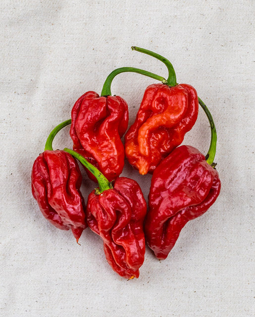

Trinidad Moruga Scorpion

Description
The Trinidad Moruga Scorpion is an extremely hot pepper native to the region of Moruga in Trinidad and Tobago. It currently sits as the second hottest chilli in the world after the Carolina Reaper. Although it has clocked in at 2 million SHUs at its most potent, on average the pepper are in the 1.2 million Scoville heat units range. The smallish, puckered fruits mature from green through orange and then to a deep red, at which point the flavour is most refined and fruity. This species of pepper can be grown as a perennial in warmer climates (or heated greenhouses), or brought inside over winter.
Planting Information
Spacing
30-60cm (12-24″) between plants
Notes
- Soil should have abundant phosphorus and calcium, so add lime and compost to the bed at least three weeks prior to transplanting
- Mix ½ cup of balanced organic fertilizer beneath each plant.
- Peppers will tolerate dry soil, they will only put on good growth if kept moist.
- Harden off seedlings before planting
- Pinch back growing tips to encourage leaf production
Companion planting
Friends
- asparagus
- basil
- carrots
- cucumbers
- eggplant
- endive
- oregano
- parsley
- rosemary
- squash
- Swiss chard
- tomatoes
Foes
- beans
- broccoli
- Brussels sprouts
- cabbage
- cauliflower
- fennel
- kale
- radishes
- turnips